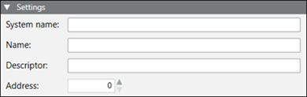
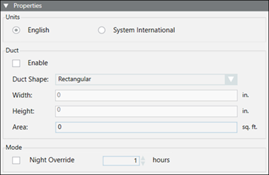
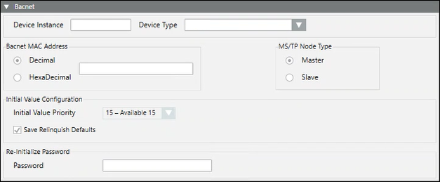
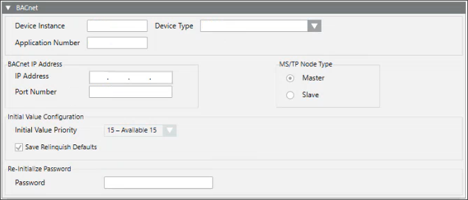

Add an FLN Device
- An FLN folder already exists under an APOGEE BACnet panel.
- From System Browser, select the FLN folder, and then select the Add FLN Device tab.
- In the Settings expander, complete the following fields:
- System Name (the System Name must be unique across the APOGEE System)
- Name
- Descriptor
- Address (the Address, also known as Drop Number, must match the physical device address for the TEC)
NOTE: The Address field displays for P1 devices only.
- Do one of the following:
- For P1 devices, complete the fields in the Properties expander:
- Units (English or System International)
- Duct (configure duct shape and size)
- Night Override (modify the default setting of 1 hour)
- For MS/TP devices, complete the fields in the BACnet expander:
- Device Instance
- Device Type (BACnet MS/TP)
- BACnet MAC/IP Address (based on device type)
- MS/TP Node Type
- Initial Value Configuration (includes Initial Value Priority and Save Relinquish Defaults)
- Re-Initialize Password
- For IP FLN devices, complete the fields in the BACnet expander:
- Device Instance
- Device Type (BACnet IP)
- BACnet IP Address (based on device type)
- MS/TP Node Type
- Initial Value Configuration (includes Initial Value Priority and Save Relinquish Defaults)
- Re-Initialize Password
- Click Save
 .
. - The device is added to the FLN.
- (Optional) For MS/TP devices, if you want to perform backup and restore, do the following:
- From System Browser, select an FLN device object.
- Select the BACnet tab.
- Click the Backup/Restore Information expander.
- Enter the password for Re-initialize Password you entered in Step 3.
NOTE: The password only needs to be entered once per device object. - Click Save .
NOTE: DXRM FLN devices are temporarily in a “failed” state when added to an APOGEE BACnet panel. After a few minutes, however, the devices transition to a “normal” state. If BACnet discovery starts when a DXRM device is in a “failed” state, discovery will fail. Once the DXRM device is “normal,” discovery will succeed. Additionally, if auto discovery is enabled, a DXRM device will be discovered once its state is “normal.”
NOTE: When you add an MSTP FLN device, password decryption might fail. If that is the case, you will see severe error traces. The system will still add the FLN device to the panel, but the password will not be set. The error traces will not occur in two instances:
- When using the Click-Once client
- When the logged-in user is set as the system user from the specific account setting in SMC